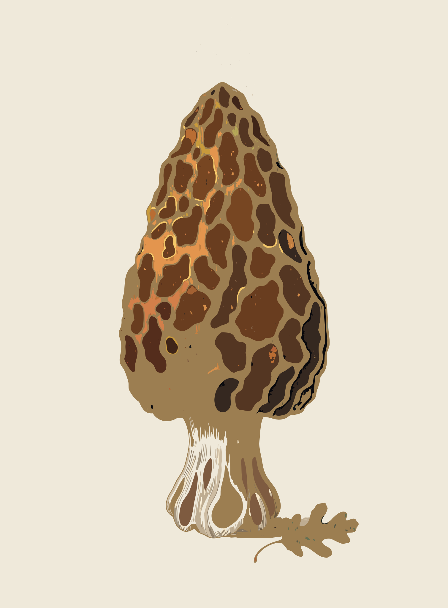
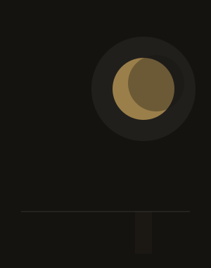
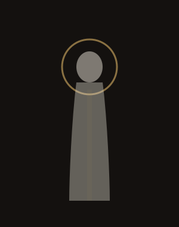
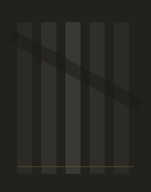
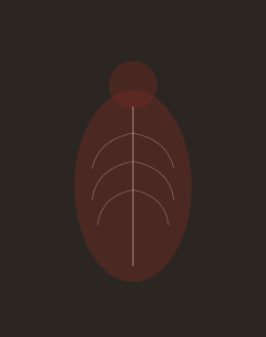
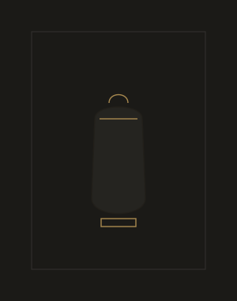
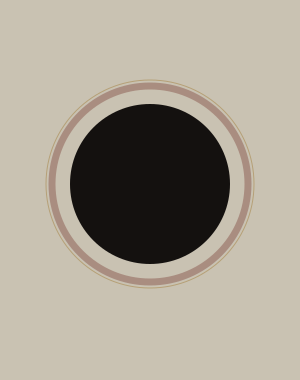
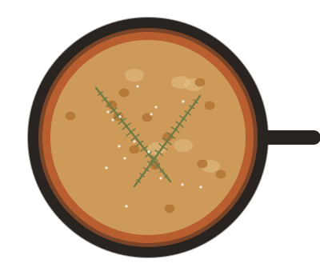

Four things you'd
actually keep.
Set 01 was the paperwork — rate cons, tickets, invoices, slips. Set 02 is the opposite of a receipt: a year-in-motion recap, a deck of collectible field cards, a gallery exhibition guide, and a recipe worth printing. Four unmistakable worlds — still one discipline of type, grid, hairline, and a single accent per world.
Cadence
"Your Year in Motion." A Wrapped-style running recap that lands in December and demands to be shared. Not a summary email — a year told in giant numbers. Alex · 2026 · one sodium-orange accent, effort and forward-motion only; sage for the supporting cast.
in Motion
You showed up 142 times. Here's the shape of your year.
Five chapters, one athlete, twelve months of dawn. Scroll down — it gets loud.
Across 142 runs — a +18% jump on last year. October was your biggest month; December, your rest.

Vertical metres climbed this year. Your legs did the Matterhorn, floor to summit, twenty-two times over.


The Dawn
Patrol
You logged 38 runs before sunrise. The city was still asleep. You weren't. This is who you were in 2026.
56 · 64 · 76 · 80
SPORE
A collectible field-guide deck — one specimen per card: silhouette, italic binomial, rarity pip, a four-stat block, a line of flavour. Unlock them by email, browse the deck on the web, print-and-cut the whole set. Forest-ink on spore-cream · rust marks the edibility verdict; rarity lives only in the pip.

SPORE
Twenty-four species to find, identify, and keep. Six in your deck so far.

28 · 40 · 44 · 56
Nocturne
A dark-academia exhibition identity for the painter Elias Vaughn at The Aldous Institute. The one world that breaks the sans discipline: serif-led (EB Garamond) for the show title, work titles and the pulled statement — mono only for labels and dates. Near-black throughout · gilt is the light in the dark; oxblood a whisper.

Nocturne
Six late paintings, shown together for the first time. Opening night Saturday 12 September, 7 pm.
Plan your visit →
Elias Vaughn paints the hour when things lose their edges. Across eight years his surfaces darken and thin, until each figure is less seen than remembered — a veil, a reliquary, a saint in negative. Nocturne brings these late paintings together; linger, and let your eyes adjust.




14 Coirse Row
ADMISSION FREE
OPENING 12 SEP · 7 PM
PAINTINGS 2018–2026 · 12 SEP – 30 NOV 2026
CURATED BY M. ALDER · GALLERY GUIDE №1
Elias Vaughn paints the hour when things lose their edges. Across eight years his surfaces darken and thin, until each figure is less seen than remembered — a veil, a reliquary, a saint in negative.

48 · 64 · 72 · 88
Mise
A recipe card you’d actually pin to the fridge. One dish — Cast-Iron Rosemary Focaccia — as an email, a full web page, and a printable 4×6 clip-card. Warm paper, Space Grotesk for the dish, mono for every measure and time · burnt-sienna accent, muted olive for the cook’s notes.
№ 34
Cast-Iron Rosemary Focaccia
Crisp-bottomed, dimpled, olive-oil rich — the easiest bread you’ll make on repeat. One skillet, four ingredients you already own.

Cast-Iron Rosemary Focaccia
Crisp-bottomed, dimpled and rich with olive oil. One 10-inch skillet, four pantry ingredients, and an afternoon of patience.
Cast-Iron Rosemary Focaccia
26 · 44 · 48 · 56